Chapter 3. Locations
When setting up a new Early Warning, Alert and Response System (EWARS) account, organizing reporting locations is the primary activity. This chapter will help you to set these up.
EWARS needs to recognize reporting units (such as health facilities and shelters) and health administrative levels at national and subnational levels of a country, and their context, before establishing a reporting mechanism.
By setting up locations, you enable the following three key actions:
letting EWARS know your reporting locations by adding reporting locations and their hierarchies (via the “location tree”) to the system;
letting EWARS know what information each reporting location should report by assigning reporting forms to reporting locations;
letting EWARS map data geospatially by adding geographical data to reporting locations.
To clarify these processes, this chapter uses the example of Nambutu (a fictional country). For demonstration purposes, let’s say that the Account Administrator has to establish reporting from four health facilities within two provinces of Nambutu: Bilnula, Birigo, Dirabi and Isltun primary health-care centres (PHCCs). To do this, a location tree should be created (Fig. 3.1).
Fig. 3.1. Example location tree
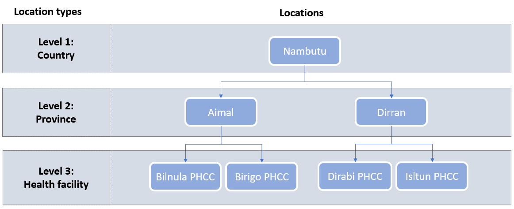
This example shows three location types with the hierarchy of Level 1: Country > Level 2: Province > Level 3: Health facility. Level 1 and Level 2 are administrative location types, whereas Level 3 is a reporting location type.
Other administrative location types may also be relevant to your context, such as a state, district, county, hub, governorate or health area. Other reporting location types include health posts, mobile clinics, field hospitals, community health worker areas and community health volunteer areas.
EWARS uses the parent–child hierarchy when describing locations. In Fig. 3.1 above, Nambutu is the Parent location for provinces Aimal and Dirran. Using the same logic, it also follows that Aimal and Dirran are the Child locations of Nambutu.
In brief, it is important to recognize the types of locations and their hierarchies applicable to your context by creating a location tree before you create locations. This logic is used throughout when creating new locations or adding locations to an established EWARS account.
3.1 Creating, editing and deleting location types
The first step in creating locations is inputting the location types applicable to your context. You can create as many administrative and reporting location types as you need. In the example of the fictional country Nambutu, the location tree has three location types: country, province and health facility.
Creating, editing and deleting location types is done under settings.
To create location types, follow the steps below.
- Click on the settings
 icon at the top right-hand corner of your dashboard screen. Click on in the menu on the left of the screen. Click on
icon at the top right-hand corner of your dashboard screen. Click on in the menu on the left of the screen. Click on 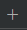
, and the following screen appears:
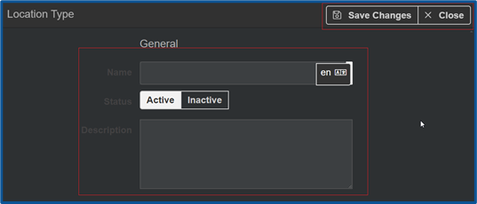
Enter the name of the Location Type (e.g. “Country”). To enter the name in French, click on en in the right-hand box and select fr from Available Languages. Enter the name in French. It will be visible in French once you have selected French as your default language.
Set Status as Active.
Enter the Description for the Location Type (e.g. “This is a top-level location type”).
Click on Save Change(s). A notification appears, confirming that the location type has been added.
Repeat the steps above to add a Province or Health facility location type.
The newly added location types are displayed as shown below:
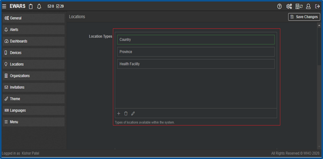
Follow the steps below to edit an existing location type.
- Click on the settings icon at the top right-hand corner of your dashboard screen. Click on in the menu on the left of the screen. Click on the Location Type that needs editing. Click on the edit
 icon and make the changes. Click on Save Change(s). A notification that the changes have been saved appears.
icon and make the changes. Click on Save Change(s). A notification that the changes have been saved appears.
Follow the steps below to delete an existing location type.
- Click on the settings icon at the top right-hand corner of your dashboard screen. Click on in the menu on the left of the screen. Click on the location type to be deleted. Click on the delete
 icon and Confirm. A notification that the location type has been deleted appears.
icon and Confirm. A notification that the location type has been deleted appears.
3.2 Creating locations
Once you have added location types in the system, the next step is to categorize locations under existing location types.
Locations can be entered in EWARS either manually or in bulk. For either method, four key variables need to be known about each location before the details can be entered:
Location name: the name of the location to be added
Location type: the location type of the location to be added
Parent location: the parent location of the location to be added
PCODE: the place code of the location to be added.
Place codes (PCODEs) are unique identifiers for locations that are represented by combinations of letters and/or numbers to identify a specific location within a database – these provide a systematic means of linking data to a specific, unambiguous location, such as “NBT001” or “NBT001HF001” in this fictional example. PCODEs need to be identified for each new location before entering it in EWARS.
Before entering the locations in EWARS, list all the locations and their variables as shown in Table 3.1.
Table 3.1. Locations and variables
| No. | Location name | PCODE | Location type | Parent location |
| 1 | Nambutu | NBT | Country | – |
| 2 | Aimal | NBT001 | Province | Nambutu |
| 3 | Bilnula PHCC | PHCC001 | Health Facility | Aimal |
| 4 | Birigo PHCC | PHCC002 | Health Facility | Aimal |
| 5 | Dirran | NBT002 | Province | Nambutu |
| 6 | Dirabi PHCC | PHCC003 | Health Facility | Dirran |
| 7 | Isltun PHCC | PHCC004 | Health Facility | Dirran |
Parent location is the location immediately above the location under consideration.
Level 1 locations (such as Country) have no parent location as they are the highest level for a country. They are set up automatically by the system as Root location (Uncategorized).
First, you need to create the root location, from which all other locations and the location tree will span out.
The following sections set out the steps to create a location tree by editing the root location to country as the parent location and creating child locations manually one by one or importing them in bulk.
3.2.1 Editing root location as country
To set the root location as the top-level location type of your location hierarchy – as country (for Nambutu), in this example – follow the steps below.
- Select the menu icon > Locations. Click on Root Location (Uncategorized). The following screen appears:
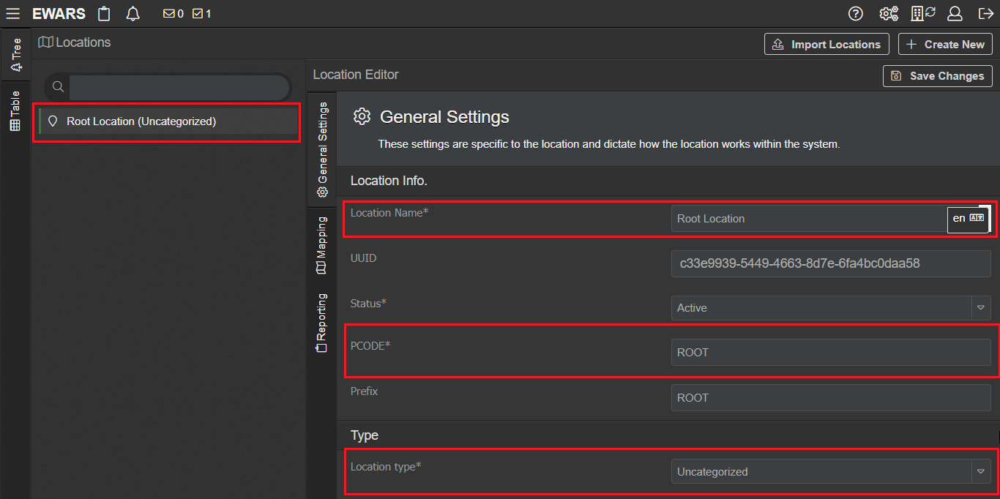
Enter the Location Name as the Country name: “Nambutu” in this example.
Give the PCODE for the Country: “NBT” in this example.
Select Location Type as Country.
Click on Save Change(s).
3.2.2 Creating child locations manually
You can create child locations – including provinces, districts and health facilities – manually in the system. As this is a manual process, creation of new locations is done one by one.
Please follow a hierarchy when creating locations manually: the parent location must be created before the child location.
 Have a location tree created in a separate Excel spreadsheet. This makes entering each location in EWARS within the correct hierarchy much easier.|
Have a location tree created in a separate Excel spreadsheet. This makes entering each location in EWARS within the correct hierarchy much easier.|Using the example shown in Fig. 3.1, the following steps explain how to add the six locations manually.
- Select the menu icon > Locations. Click on Create New, and the General Settings tab opens:
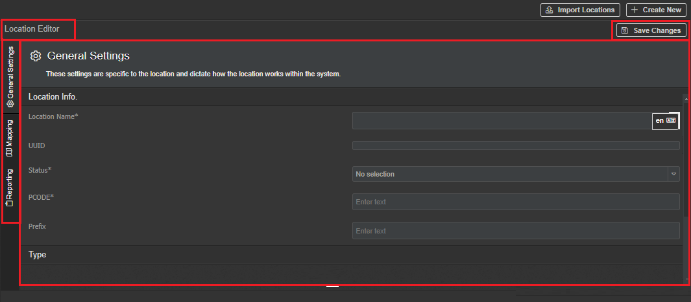
Enter the new Location Name: “Aimal” in this fictional example.
The UUID (universally unique identifier) is a system-generated unique number assigned to the new location.
Set Status as Active.
Active locations appear in green; these can receive reports.
Inactive locations appear in red; these cannot receive reports.
Enter the PCODE for the new location: “NBT001” for Aimal in this example.
Enter the location Prefix – for example, for Aimal the prefix is AIM (see Table 3.1).
 Note: A prefix is useful to auto-generate unique identifiers on form submissions. For more information, refer to Chapter 6. Forms, topic 6.8.4.2 Auto-generating a unique ID on form submissions.
Note: A prefix is useful to auto-generate unique identifiers on form submissions. For more information, refer to Chapter 6. Forms, topic 6.8.4.2 Auto-generating a unique ID on form submissions.
Select an appropriate Location Type from the drop-down menu (e.g. Provinces).
Enter the Location Group name – for example, let’s assume that Aimal belongs to nongovernmental organization (NGO) A or NGO B. You can assign multiple groups by separating them with a comma (,). For more information, refer to topic 3.6 Adding locations to the location group.
Select an appropriate Parent Location from the drop-down menu. The new location is created as a Child of the selected Parent location.
Click on Save Change(s).
Follow the same steps to create all six locations. Entered locations are displayed in the location tree on the system.
- Click on the folder icon on the left to see the correct location pathway for each location entered. The expanded location tree appears, as shown below:
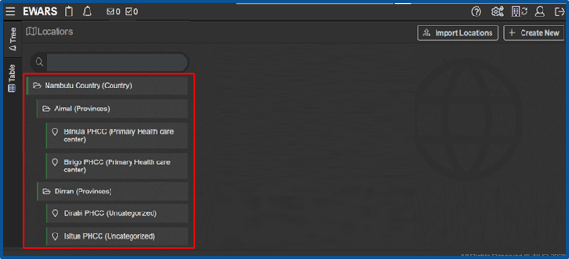
Within the location tree, the folder icon represents administrative locations, while the location icon represents reporting locations.
3.2.3 Importing child locations in bulk via a CSV file
Rather than entering them individually, manually, you can import all provinces, districts and health facilities in your location hierarchy at once using a comma-separated values (CSV) file.
| Use the import feature when you need to set up many reporting sites in EWARS rapidly. |
Check the flowchart in Fig. 3.2 to understand the process of importing locations.
Fig. 3.2. Flowchart for importing locations
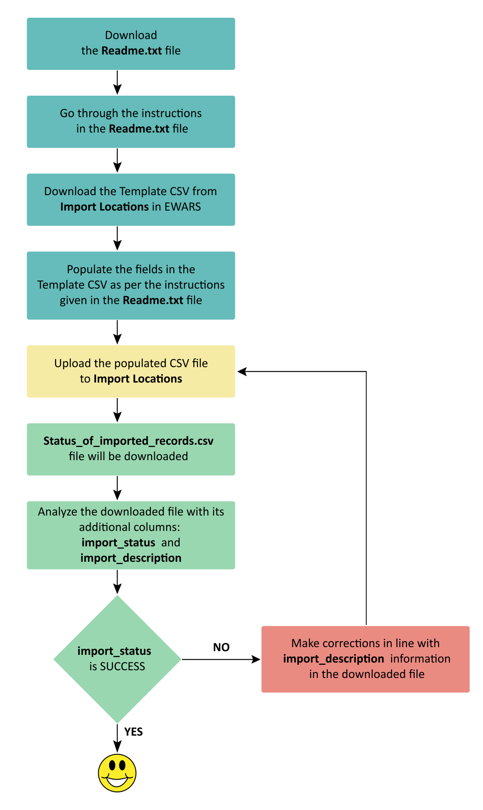
Follow the steps below to import locations as shown in Table 3.1.
Step 1. Select Menu > Administration > Locations > Import Locations. The following screen appears:
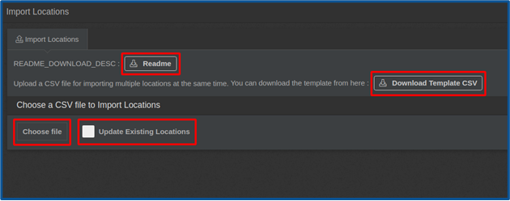
Step 2. Click on Download Template CSV and open the locations_template file in Excel:
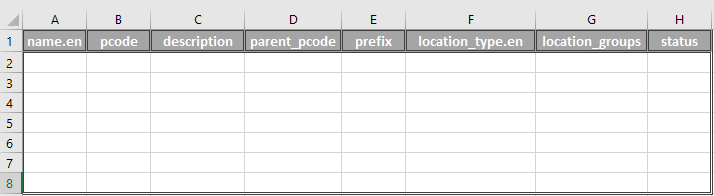
Step 3. Populate the CSV file as shown in the example below:
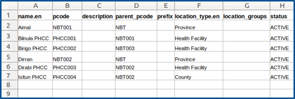
| Note: for successful location import, the Parent row must be added before the Child rows. |
| Be careful to ensure that spellings, uppercase and lowercase letters are accurate while doing the bulk import of locations. |
Populate the columns as outlined below.
name.en [Mandatory]: enter the location name in English. If you want to add a name in French, change the column name from “Name.en” to “Name.fr”. Here, “en” and “fr” denote the language code, which is defined when adding new languages. To obtain codes for other languages, click on the settings
icon and click on  .
.pcode [Mandatory]: enter a unique PCODE for the location (e.g. “NBT001” for Aimal in this example).
description: enter a short description of the location.
parent_pcode [Mandatory]: enter the PCODE of the Parent location.
Note: parent locations must be imported before doing the bulk import or the locations will not be able to be imported, and an error message will appear. —————————————————————————————————————————————————-
prefix: enter the location prefix (e.g. “NBT” for Nambutu). A prefix is useful to auto-generate a unique identifier on form submissions. For more information, refer to Chapter 6. Forms, topic 6.8.4.2 Auto-generating a unique ID on form submissions.
location_type.en: enter the type under each location name (e.g. “Health facility”, “Mobile clinic”).
location_groups: enter the location group’s name (e.g. NGO A or NGO B). You can assign multiple groups by separating them with a comma (,). For more information, refer to topic 3.6 Adding locations to the location group.
status: enter the status “ACTIVE”.
Save the file.
Complete only the mandatory fields for a rapid import.
Step 4. On the Import Locations screen, Click on
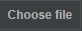
> browse and select the prepared CSV file. The Status_of_imported_records.csv file is downloaded.Step 5. Analyse the Status_of_imported_records.csv file as below.
The downloaded Status_of_imported_records.csv file has two additional columns: import_status and import_description.
All successfully imported rows have import_status as SUCCESS and import_description as Created successfully. For any unsuccessful imports, import_status appears as FAILED. The reason for any failure listed is indicated in the import_description column.
The following is a screenshot of the Status_of_imported_records.csv file:
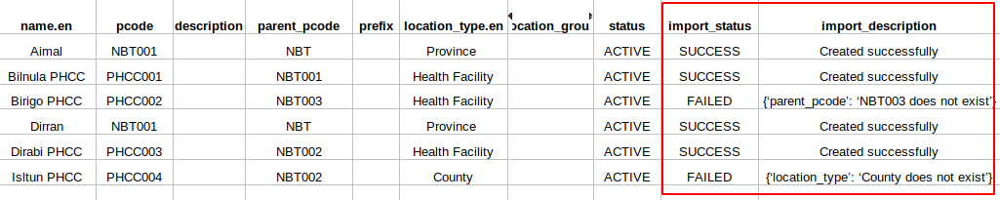
As shown in the screenshot, four locations have been successfully imported and two locations have failed to import. For location Birigo PHCC, import_description states “parent_pcode: NBT003 does not exist”; this means that a location with the parent PCODE provided (NBT003) is not available in the system. You need to create the parent location first and then import the location Birigo PHCC.
Similarly, for location Isltun PHCC, import_description states “location_type: County does not exist”; this means that the location type provided (County) is not available in the system. You need to create the location type “County” first, and then import the location Isltun PHCC.
Note: to reimport locations that cannot be imported at the first attempt, you need to make the appropriate corrections to the field in the file, as per the instructions in the import_description, and then import the locations again.
Step 6. After creating all locations, select Menu > Locations. Click on the Table tab on the left, and the imported locations are listed, as shown below:
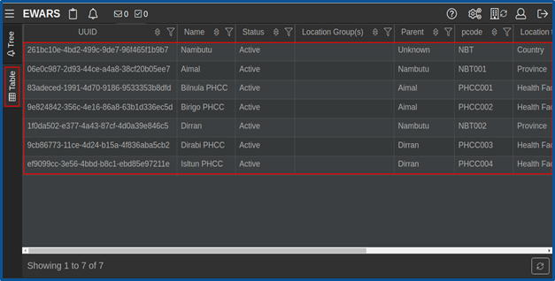
3.3 Editing locations
Existing or imported locations can be edited when there is a change in their name or status.
Locations can also be edited either individually or in bulk via a CSV file.
3.3.1 Editing locations individually
- Select Menu > Locations > expand or search location you want to edit by clicking on the folder icon of the parent location, and clicking on the name of the location you would like to edit. Information on the location will appear on the right-hand side under General settings. Make changes or edits and Save Change(s).
| When you have few locations that need to be edited, use General Settings to edit locations individually. |
3.3.2 Editing locations in bulk via a CSV file
Editing locations in bulk allows you to edit all variables except the PCODE. It can be useful in situations involving the same change to multiple locations at once – for example, if 20 PHCCs managed by NGO A plan to change their management to NGO B, or if you need to disable reporting from multiple PHCCs because they are decommissioned. Instead of changing each location individually, you can edit everything easily in one action by creating a CSV file with the changes you want to make to the existing locations.
To identify a location, the PCODE is the primary identifier. It is a mandatory column in the CSV file. For example, Birigo PHCC is an active PHCC in the system, and you want to disable reporting from it. EWARS will rely on the PCODE to identify which PHCC needs to be disabled. It is therefore paramount that the PCODE of the new CSV file with your changes matches the existing PCODE of the location. If the PCODEs do not match or there are no existing locations using that PCODE, you will not be able to edit or introduce new changes with bulk importation.
See the example below of how to change the status of reporting locations Birigo PHCC and Isltun PHCC and set the location as disabled.
- Select Menu > Administration> Locations > Import Locations. Click on Download Template CSV and open the locations_template file in Excel:
- Populate the CSV file as shown in the screenshot below:
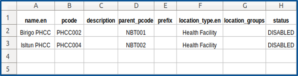
Check the box in > click on > browse and select the prepared CSV file. Status_of_imported_records.csv file is downloaded.
Analyse the Status_of_imported_records.csv file as below:
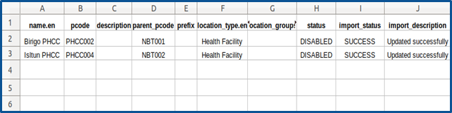
The file downloaded is the same as the uploaded file with two additional columns: import_status and import_description.
The import_status column shows the success or failure of the imported records, with reasons for any failures indicated in the import_description column.
To edit locations that could not be updated at the first attempt, you need to make the appropriate corrections to the field locations according to the instructions given in the import_description column, and import the locations again.
3.4 Adding geographical mapping information to locations
EWARS supports the integration of geographical information to locations you have entered. EWARS allows locations to be displayed as either a point or a geometric polygon.
Reporting locations such as health facilities, clinics and treatment centres are points. Administrative locations such as countries, provinces and districts are geometric polygons. They appear as highlighted in Fig. 3.3.
Fig. 3.3. Examples of a point location and a polygon
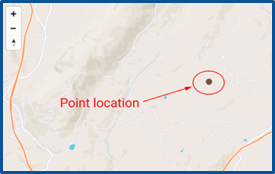
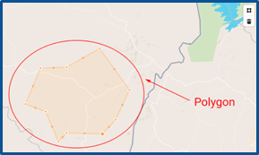
EWARS supports geographical mapping with GeoJson files. If you plan to develop maps with EWARS data, please have your GeoJson dataset ready for the locations.
3.4.1 Mapping reporting locations as point locations
- Select Menu > Locations. Click on the folder icon > click on Location Name > click on the Mapping tab at the left-hand side. Select Point from the Mapping Display Type drop-down menu, and the screen below appears:
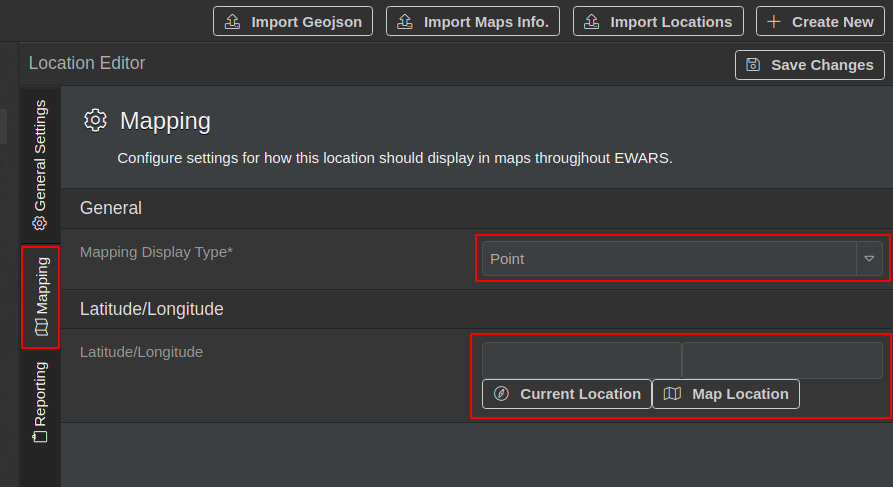
Provide latitude and longitude information for the location. This can be achieved in three different ways.
Enter it manually: type in the latitude and longitude coordinates of the location.
Enter it via Current Location: if you are currently at the location, this method can be used to automatically input the latitude and longitude. Click on Current Location and confirm that EWARS should use your current location. The latitude and longitude coordinates are added.
Note: for security reasons, the browser may ask you to allow use of the location service. Select Confirm to allow this. —————————————————————————————————————————————————-
- Enter it via Map Location: with this method, you can specify a location on the map to get the latitude and longitude coordinates. Click on Map Location. Navigate and locate the location on the map, and double-click on the centre of the location. Close the map screen, and the latitude and longitude coordinates are set automatically in the input box. Click on Save Change(s).
3.4.2 Mapping administrative locations to geometric polygons
Before embarking on mapping locations as geometric polygons, please make sure you have GeoJson files for the administrative locations in your context.
- Select Menu > Locations. Click on the folder icon > click on Location Name > click on the Mapping tab at the left-hand side. Select Geometry from the Mapping Display Type drop-down menu, and the screen below appears:
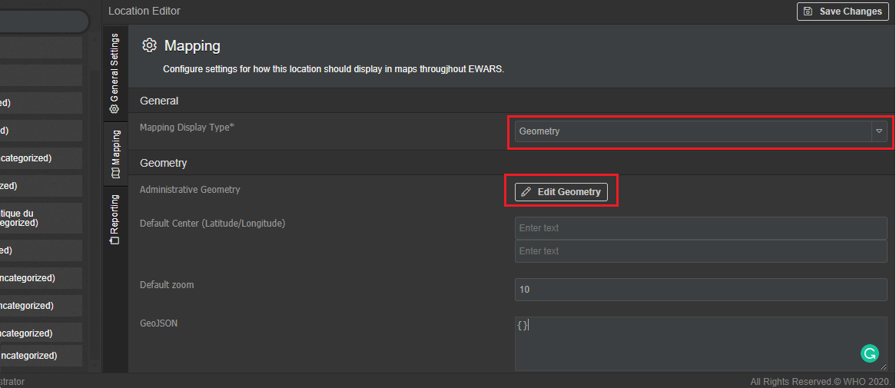
- Paste the mapping data information in the GeoJSON field, as shown below:
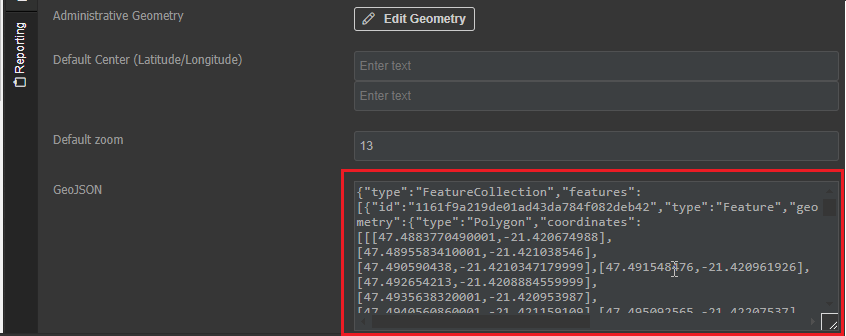
- Click on Edit Geometry, and a map of the location appears, as shown below:
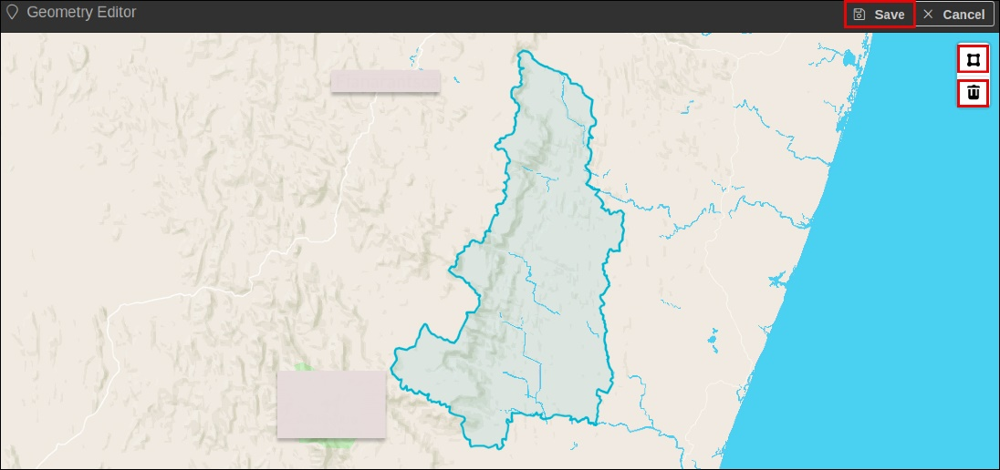
- Click on Save Change(s).
3.5 Adding reporting information to locations
Note: to add reporting to locations, you need to have reporting forms ready. For information on creating and configuring the reporting forms, refer to Chapter 6. Forms, and then revisit this topic to connect the locations to the reporting forms. ——————————————————————————————————————————————————————
The reporting tab enables you to set up reporting from different locations, including setting up reporting periods. For example, you can create a weekly EWARS reporting form or an event-based surveillance form for 23 February 2021 to 31 December 2021.
This helps during emergencies, when reporting status may change over time. New reports can be added to locations or removed. This section explains how such modifications can be done easily.
It is important to manage the reporting periods carefully and keep them up to date to calculate performance indicators, completeness and timeliness accurately. —————————————————————————————————————————————————-
You can add reporting forms under each reporting location manually. In most instances, however, all PHCCs within a particular province or district tend to report using the same reporting form. In that case, you can set up a reporting tab at the province level so that all changes are inherited by the child locations.
- Select Menu > Locations > click on a reporting Location Name > click on the Reporting tab. Click on Add Reporting Period > select the relevant Form from the drop-down menu and select Start Date, End Date and Status.
Reporting start and end dates remain flexible, and can be edited later. Form and start date are mandatory fields, but the start date can be edited later.
Note: you can select a start date that pre-dates the current calendar date. This allows the reporting location to report retrospectively, depending on the report. You can select an end date that is far in the future. —————————————————————————————————————————————————-
Set the Status of reporting (Active/Disabled). By default, the status is set as Active.
Click on Save Change(s). The reporting period is added, as shown below:
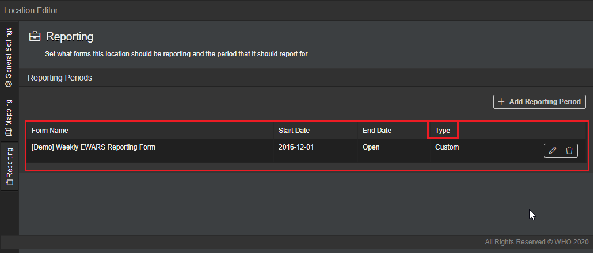
Type is shown as custom when the reporting period is based on your preference (i.e., custom-made). It is shown as Inherited when the reporting period is inherited from the parent location. For example, all health facilities in a particular province or district may report within a specific period; that period is inherited from the province or district level.
To edit the reporting details, click on the edit
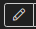
icon > make the desired changes > click on Save Change(s). A notification appears to confirm that the information has been edited.To delete the reporting details, click on the delete
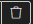
icon > click Confirm. A notification appears to confirm that the information has been deleted.
3.6 Adding locations to the location group
Locations can be grouped based on your needs. For example, you can group reporting locations in internally displaced person (IDP) camps, locations belonging to humanitarian NGOs, remote areas and so on. This enables disaggregation of data by grouping.
One location can be a member of several groups. For example, Birigo PHCC can be grouped under the location groups “IDP camp clinics” and “NGO A”.
Location groups are also useful when configuring widgets. For more information, refer to Chapter 17. Widgets and their configuration.
To group locations, add the group name to the location details under general settings.
- Select Menu > Locations > select a reporting location you want to group (e.g. Dirabi PHCC ), and the screen below appears:
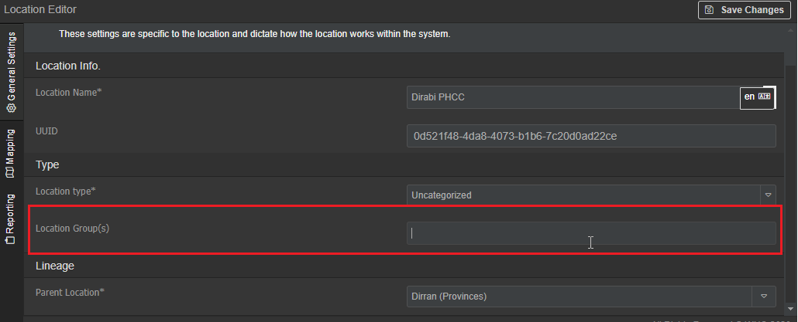
- Enter a Location Group name (e.g. “NGO A”). A popup screen appears as below:
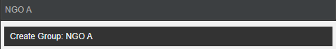
- Click on Create Group: NGO A, and the Group is added as below:
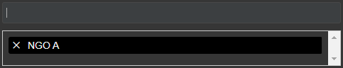
- Click on Save Change(s), and the location is added to the group.
To continue grouping other locations, follow the steps above.
You can view all locations belonging to a group under the table tab at the far left-hand side.
- Select Menu > Locations > click on the Table tab. Click on the filter
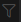
icon in the Location Group(s) column > select Is equal to under Filter by condition > select NGO A under Filter by value. Click on Save Change(s), and the screen below appears:
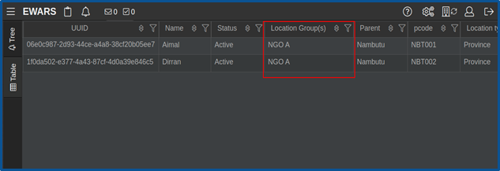
3.7 Activating and deactivating child locations
Child locations can be activated or deactivated.
- Select Menu > Locations > select a location you want to activate/deactivate. Right-click on the location name and the screen below appears:
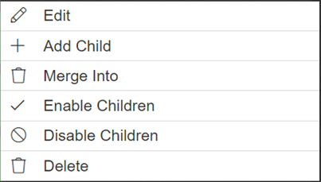
Click on Disable Children, and child locations of the parent location are deactivated.
Click on Enable Children, and child locations of the parent location are activated.
3.8 Merging child locations with another location
You can merge the child locations of a parent location with another location.
- Select Menu > Locations > expand or search location “Birigo PHCC”. Right-click on the location name, click on Merge Into, and the screen below appears:
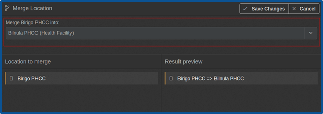
Select the destination location from Merge [location] into drop-down menu – Bilnula PHCC in this example.
Click on Save Change(s).
Birigo PHCC is merged into Bilnula PHCC.
Once the merge is complete, Birigo PHCC will not be available in the system. Only the merged location – Bilnula PHCC – will remain in the system.
3.9 Viewing locations under the tree tab
To view the locations in a hierarchical manner, follow the steps below.
- Select Menu > Administration > Locations. Click on the Tree tab > click on a location folder icon. Right-click on the location name, and the screen below appears:
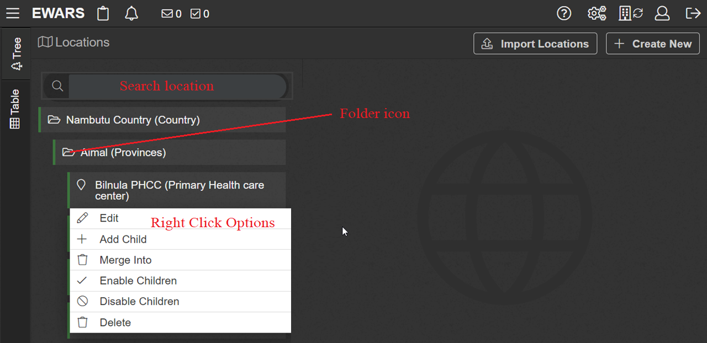
Click on Save Change(s).
To expand or collapse the location, click on the folder icon.
The green highlighted bar by each name indicates Active locations; the red bar indicates that the location is Inactive.
3.10 Viewing locations under the table tab
The table tab displays locations in tabular form.
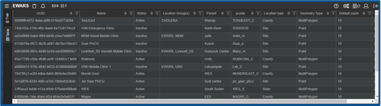
Select Menu > Administration > Locations. Click on the Table tab, and the screen below appears:
3.11 Exporting locations
You can also export locations to share them with other users. To find out how to use the Export feature effectively, refer to Chapter 23. Exports, topic 23.4 Exporting locations data.